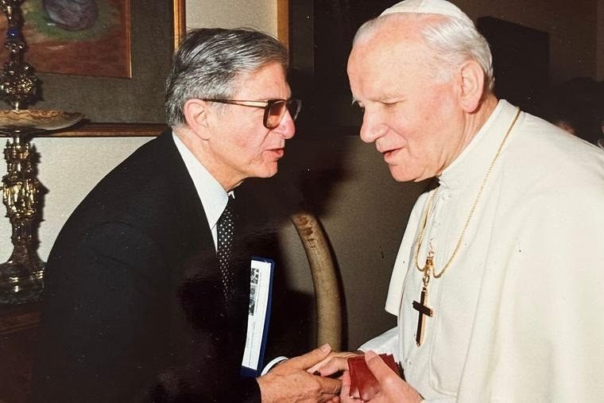

Over seven decades as a Catholic, James Likoudis became one of the most productive and clear-headed lay defenders of the papal magisterium in twentieth-century American Catholicism. Born to Greek immigrants in Lackawanna, New York, baptized in the Greek Orthodox Church, and received into full communion with Rome at twenty-three after serving his country in Korea, his life traced the very arc of reunion he spent it advocating for. He wrote more than ten books, over 300 essays, shaped Vatican documents, debated in packed town halls, appeared on national television, and remained, by every account, a man of humor, discipline, and personal holiness.
James Likoudis was born on December 11, 1928, in Lackawanna, New York, a working-class steel town on the southern edge of Buffalo, built largely by immigrant communities from eastern and southern Europe. His parents were Greek immigrants who had come to America seeking a better life and found it; even in the depths of the Great Depression, his father opened a local ice cream parlor that operated for fifty years. Family life was fortified by Greek Orthodox faith, and James's upbringing in that tradition, with its liturgical cadences, its patristic sensibility, and its communal piety, remained a source of strength throughout his life and a point of genuine theological reference throughout his scholarly career.
After high school, James went to study history and philosophy at the University of Buffalo, where his beliefs came under sustained attack from professors hostile to organized religion. Traditional faith and values were portrayed as enemies of enlightened thinking, obstacles to democratic progress. While he never lost his Christian faith, he was shaken, not because he doubted, but because he did not yet know how to answer.
Then came a visit to the University's Newman Club, with its library of Christian thought. Theologians like Thomas Aquinas and John Henry Newman, early twentieth-century Dominicans like Vincent McNabb and Gerald Vann, and the historian Christopher Dawson gave him the intellectual armory he needed. As he later wrote: "At a time when my secular courses began to pose all sorts of difficulties regarding historic Christian beliefs, I found in such writers a treasure trove of arguments, and the genius to challenge intellectually their rationalist and skeptical opponents." He was pleasantly surprised to find that at least a few of his more thoughtful professors, when presented with the evidence, acknowledged Christianity's pivotal role in advancing Western civilization.
From those years he drew three convictions that governed the rest of his life: always be prepared to make a defense of the faith (1 Peter 3:15); never give up on winning over an opponent; and understand that objective truth is not an obstacle to a free society but its indispensable foundation.
By the early 1950s, Likoudis was serving in Korea in the medical corps. His faith had matured, but Eastern Orthodoxy would not be his final spiritual home. His appreciation for the Catholic intellectual tradition, which had played such a decisive role in reinvigorating his faith at Buffalo, which led him to study the history of the papacy, the largest stumbling block between Catholicism and Eastern Orthodoxy. After extensive study, he was received into the Catholic Church in 1952. He retained his reverence for Eastern Orthodoxy, and the search for Catholic-Orthodox reunion, encouraged by numerous popes, became a consuming passion for the rest of his life.
The greatest impact on James as a young man was his marriage to Ruth. As a young newlywed, Ruth joined the Catholic Church with James and, as he later wrote, "amidst the storms that would beset the Church, never failed in her fidelity to the Church's teachings." Her relatives and friends remembered her as a strong and elegant woman, a beloved wife and mother who loved life and brought joy to everyone she met. Their marriage lasted 71 years, producing six children, thirty-five grandchildren, and over forty-four great-grandchildren. By the time of Ruth's death in early 2023, the family she and James had built together was itself a theological argument.
Likoudis spent more than two decades as a teacher. He taught social studies to high school students and served as a history and government instructor at St. John's of the Atonement, the Franciscan minor seminary in New York, and at Rosary Hill College (now Daemen University) in upstate New York. Former students remembered him years later as engaging and demanding, a teacher who insisted on learning to think, not merely to recite. He lectured seminarians as well, and his influence on the priests he formed is visible in their subsequent work.
For twenty years, he combatted the errors of secular progressivism in high schools, colleges, and seminaries, teaching courses on history, government, and Western civilization, and exhorting his students to uphold, in Matthew Arnold's phrase, "the best that has been thought and said."
In 1977, he also translated Renée Casin's St. Thomas Aquinas: Orthodoxy, and Neo-Modernism in the Church from French into English, evidence of a scholar willing to work in service of ideas, regardless of whether they bore his own name.
Likoudis's most sustained institutional work was at Catholics United for the Faith (CUF), the lay apostolate founded in 1968, the same year as Humanae Vitae and the same year organized Catholic dissent began to take institutional form. He served CUF for more than twenty-five years, eventually as president emeritus, and founded Credo of Buffalo.
At CUF, his work was simultaneously doctrinal, pastoral, and strategically effective. He was a leading voice for fidelity to Humanae Vitae at a time when that required real institutional courage. He debated in packed town halls on abortion and parental rights, crowds lined up outside the doors, through the 1970s and 1980s. And he ran campaigns that produced concrete results at the highest levels of the Church.
His campaign against Christ Among Us, a catechism widely used in Catholic religious education that containing serious theological errors, eventually reached Cardinal Joseph Ratzinger and the Congregation for the Doctrine of the Faith. The CDF removed the book's Imprimatur and Nihil Obstat and requested that Paulist Press cease publication. Ratzinger sent Likoudis a handwritten letter commending his work and offering personal encouragement. He played a comparable role in pressing for action against the theological modernism taught by Charles Curran at Catholic University of America; Curran was eventually removed from his teaching position.
When twenty-five Catholic religious signed a 1984 New York Times advertisement suggesting that abortion could sometimes be morally permissible, Likoudis pressed the Vatican to act. By 1986, nearly all of the signatories had retracted their position. The two nuns who refused eventually left their order. Likoudis hailed the outcome as "a victory for all pro-life people in the United States."
He also contributed to books by Dr. Stephen Krason of Franciscan University, founder of the Society for Catholic Social Scientists, on the relationship Catholics should have with politics. One of those books had excerpts submitted to the Congressional Record by Representative Jack Kemp of New York.
Likoudis represented CUF at a Vatican meeting convened by Cardinal Alfonso López Trujillo, President of the Pontifical Council for the Family. That meeting produced the foundational document Truth and Meaning of Human Sexuality: Guidelines for Education within the Family. He also helped produce the Vatican document Educational Guidance in Human Love, which shaped Catholic catechetical policy on sexual education for decades.
Likoudis served as president of Morality in Media of Western New York, a branch of the organization now known as the National Center on Sexual Exploitation, and as moderator of the New York television series Sex and Morality. While living in Buffalo, he received the Morality in Media award alongside Mother Angelica in recognition of his sustained public campaign against pornography and value-free sex education.
He worked closely with Dietrich von Hildebrand and Alice von Hildebrand through their organization Veil of Innocence, serving as a board member, lecturer, and contributor. His essay appeared in Dietrich's Sex Education: The Basic Issues and Related Essays, a volume that carries, inside its front pages, a personal letter of endorsement handwritten by Mother Teresa of Calcutta. Alice von Hildebrand counted Likoudis among those she most admired and respected, "underscoring his influence among the brightest Catholic minds of the past century."
The deepest and most original thread of Likoudis's scholarly life was Catholic-Orthodox ecumenism. His trilogy on the Byzantine tradition, four books in total, constitutes the most sustained lay-scholarly engagement with these questions produced in twentieth-century American Catholic letters.
The Divine Primacy of the Bishop of Rome and Modern Eastern Orthodoxy: Letters to a Greek Orthodox on the Unity of the Church engaged Orthodox objections to papal supremacy and infallibility at the level of patristics and conciliar history, responding directly to Eastern Orthodox writer Michael Whelton's arguments in Two Paths. Eastern Orthodoxy and the See of Peter: A Journey Towards Full Communion (2006) completed the trilogy's historical and theological case for Orthodox reunion with Rome. Ending the Byzantine Greek Schism addressed the origins and perpetuation of the great rupture with the precision of a historian and the urgency of a man who had lived on both sides, and Heralds of a Catholic Russia gathered twelve personal accounts of conversion from Orthodoxy to full communion, a living testimony to the attraction of unity.
He worked not by condescension but by argument, engaging Orthodox theologians on their own terms, tracing the patristic record with care, and showing where the historical objections to Rome rest on contestable foundations. The numbers are unclear, but by his grandson's account, based on nearly a hundred testimonials received personally, it is surely in the hundreds, if not thousands, whom he helped bring into the Church over his lifetime.
Perhaps the most widely read of Likoudis's books is The Pope, the Council, and the Mass: Answers to Questions the Traditionalists Have Asked, co-authored with Kenneth Whitehead. Published in 1981, it was a direct, charitable, and thoroughly documented response to the Traditionalist critique of the Second Vatican Council and the Novus Ordo, addressing precisely the arguments of Archbishop Lefebvre's followers and others who contested the Council's authority. A second edition was published in later years; the book remains an effective resource on liturgical confusion and questions of papal authority.
Likoudis brought specific authority to this work: he was no liberal accommodationist. His entire career had been spent defending the magisterium against progressive dissent. His argument for the Council was not that it represented a rupture with tradition but exactly the opposite: to reject the Council was to reject the very principle of magisterial authority that Traditionalists claimed to be defending. The book has never been adequately answered. His final essay on the liturgical reform appeared in the volume Faith in Crisis: Critical Dialogues in Catholic Traditionalism, Church Authority, and Reform (En Route Books, 2025), a posthumous contribution to contribution to the debate he had spent forty years clarifying.
Likoudis helped Father John Hardon, SJ launch the organization Eternal Life, and wrote the foreword to Hardon's published doctoral dissertation on "Bellarmine's Doctrine of the Relation of Sincere Non-Catholics to the Catholic Church." He was a mentor to Jeffrey Mirus of CatholicCulture.org and a close friend of Scott Hahn.
He traveled to Rome regularly, meeting Pope St. John Paul II multiple times, presenting him with his books, and attending at least one private Mass with him. He met Mother Teresa of Calcutta. In Rome, he also met Dr. Robert Fastiggi of Sacred Heart Major Seminary, who became a lifelong friend. Fastiggi and Dr. Philip Blosser later petitioned Sacred Heart Major Seminary to award Likoudis an honorary doctorate of divinity in recognition of his lifetime of service. The degree was conferred in 2020, after his 91st birthday.
His work was endorsed not only by figures like Scott Hahn and Cardinal Raymond Burke, but also by two Servants of God: Father John Hardon, SJ and Hans Urs von Balthasar. Even in his nineties, he continued writing emails, giving interviews with Michael Lofton and the team at Reason and Theology, reading, and writing book endorsements.
Likoudis was a public intellectual in a form that has largely disappeared: he went where the argument was. He debated in town halls that drew standing-room crowds through the 1970s and 1980s. He appeared on Geraldo and The Phil Donahue Show, two of the sharpest arenas for contested public argument in that era. He appeared regularly on EWTN. His November 6, 1996 appearance on Mother Angelica Live reached hundreds of thousands of viewers. His episode on The Journey Home with Marcus Grodi has continued to move viewers toward Rome for nearly three decades. He ran as a mayoral candidate in Watkins Glen, New York, a conviction that faith carries civic obligations.
In a late conversation with Catholic journalist William Doino Jr., Likoudis corrected what he called the widely mistaken assumption that the upheaval of the 1960s was sudden and unforeseen. That the decade helped destabilize America and undermine its Judeo-Christian heritage could not be denied. But Likoudis emphasized that this rebellion was "the culmination of a long process of moral and cultural decay," rooted not in Woodstock but in the social fragmentation produced by two World Wars, and accelerated by "self-professed Christians who were either too passive to realize what was happening, or too timid to sound the alarm." He quoted Christopher Dawson's 1942 warning in Judgement of the Nations: that civilization was "driving before the storm of destruction like a dismasted and helmless ship" as evidence that clear-eyed Catholics had seen this coming for decades before the culture acknowledged it.
Those who knew him personally remember what does not appear in bibliographies. His grandson Andrew, who lived with him during his junior and senior years of high school, recalls a man who prayed the Rosary each day without fail, drove him to school in the mornings and talked theology at the dinner table, took him to parishes outside the county because he valued beauty in worship too much to settle for what was nearby, and stopped for donuts at Walgreens afterward. He and Ruth never fought. They quibbled about whether prayer hands should be folded or held straight. James and Ruth together taught their grandchildren, from a very young age, how to make prayer hands, a small gesture that those grandchildren carry with them still.
Figures like Dietrich and Alice von Hildebrand came to dinner at the Likoudis home. His old colleagues still call with stories from his Buffalo and CUF days: about the public forums CUF would host, about the dinners Ruth prepared for the scholars and apologists who passed through.
In 2002, Likoudis received the Blessed Frederic Ozanam Award for Catholic Social Action from the Society of Catholic Social Scientists. In 2020, Sacred Heart Major Seminary awarded him an honorary Doctorate of Divinity. His works are held at Oxford, Harvard, Princeton, Georgetown, Johns Hopkins, Columbia, Notre Dame, the British Library, and the Library of Congress.
James and Ruth had moved to Ann Arbor, Michigan, in his later years. In the words of his grandson, his final year, their first and only year apart, was marked by the singular desire to be with her again. He died on September 3, 2024, at the age of 95. His Solemn High Mass of Christian Burial was celebrated on September 14 at Assumption Grotto Catholic Church in Detroit. He is survived by six children, 35 grandchildren, 47 great-grandchildren, and great-great-grandchildren.
The Society of Catholic Social Scientists described him as "the consummate Catholic intellectual who dedicated his life to finding the light and sharing it in an age in sore need of such illumination."
December 11. Son of Greek immigrants; his father's ice cream parlor operated for fifty years. Baptized and raised in the Greek Orthodox Church.
Studies history and philosophy. Professors attack Christian faith; Newman Club library — Aquinas, Newman, McNabb, Dawson — equips him to answer them. Convictions formed that govern the rest of his life.
Serves in the United States Army medical corps during the Korean War. Faith matures. Studies the papacy and comes to see Rome not as a departure from Eastern Christianity but its proper completion.
Age 23. Ruth joins the Church with him as a young newlywed. Both remain faithful to the magisterium through decades of upheaval. Begins teaching career and lay apostolate.
History and government instructor at St. John's of the Atonement (Franciscan minor seminary) and Rosary Hill College (now Daemen University). Social studies teacher to high school students. Lectures seminarians. Teaches Western civilization and the "best that has been thought and said."
Begins what becomes a 25+ year association. Founds Credo of Buffalo. Begins his sustained defense of Humanae Vitae and the ordinary magisterium. Becomes president of Morality in Media of Western New York.
Translates Renée Casin's St. Thomas Aquinas: Orthodoxy, and Neo-Modernism in the Church from French to English.
Co-authored with Kenneth Whitehead. The definitive lay Catholic response to Traditionalist critiques of Vatican II and the Novus Ordo. Second edition published later. Still in use.
Campaigns against Christ Among Us; receives handwritten commendation from Cardinal Ratzinger. Presses Vatican on 1984 NYT abortion ad signed by 25 Catholic religious; by 1986, nearly all retract. Works with Cardinal López Trujillo; helps produce "Truth and Meaning of Human Sexuality" and "Educational Guidance in Human Love." Multiple visits to John Paul II. Meets Mother Teresa. Runs for Mayor of Watkins Glen. Debates abortion and parental rights in packed town halls. Contributes to Congressional Record via Rep. Jack Kemp.
Essay published — personal account of his journey from the Greek Orthodox Church through Greek Byzantine Catholicism to full Roman communion.
Appears on Geraldo, Phil Donahue Show, EWTN. November 6, 1996: Mother Angelica Live. Records The Journey Home with Marcus Grodi — still widely circulated. Receives Morality in Media award alongside Mother Angelica. Moderates New York TV series Sex and Morality.
Highest recognition from the Society of Catholic Social Scientists. Meets Dr. Robert Fastiggi in Rome — friendship that produces his honorary doctorate eighteen years later.
Completes the Byzantine ecumenical trilogy.
Sacred Heart Major Seminary, Detroit, confers the degree — secured by Dr. Fastiggi and Dr. Blosser. He is in his 91st year.
James and Ruth had moved to Ann Arbor, Michigan, together in his later years. Continues writing, giving interviews, and endorsing books through his final year.
Grandson Andrew Likoudis founds the Foundation in Baltimore to preserve and extend his intellectual legacy.
Died at 95 in Ann Arbor, Michigan. Solemn High Mass of Christian Burial at Assumption Grotto Church, Detroit, September 14. Survived by 6 children, 35 grandchildren, 47 great-grandchildren, and great-great-grandchildren.
Conferred by Sacred Heart Major Seminary, Detroit, for lifetime contributions to Catholic apologetics, catechetics, ecumenism, and Catholic–Eastern Orthodox relations.
Awarded by the Society of Catholic Social Scientists for distinguished Catholic social action — presented at the Society's annual meeting, October 18, 2002.
Led CUF for over two decades, mounting successful campaigns against theological heterodoxy — including the withdrawal of ecclesiastical approval from Christ Among Us under Cardinal Ratzinger.
"I have been working in the Catholic world for almost four decades now, but I've known few people who have such a passion for the apostolate and for Christian unity."
— Dr. Scott HahnAlice von Hildebrand — wife of Dietrich — counted Likoudis among those she most admired and respected, underscoring his influence among the brightest Catholic minds of the past century.
— National Catholic Register, 2024James married Ruth (née Hickleton), with whom he shared 71 years of married life. Ruth joined the Catholic Church with James as a young newlywed and, in his words, "never failed in her fidelity to the Church's teachings." She died in early 2023.
Longtime editor of The Wanderer, America's oldest national Catholic newspaper (est. 1867). For decades, he uncovered and documented clerical sex abuse — years before the Boston Globe exposé brought it to national attention. His investigative reporting shaped Catholic discourse on institutional accountability.
James and Ruth raised six children and are survived by 35 grandchildren, 47 great-grandchildren, and great-great-grandchildren — a family whose scale is itself a testimony to the faith they lived together. His grandson Andrew Likoudis founded the Likoudis Legacy Foundation in 2023.